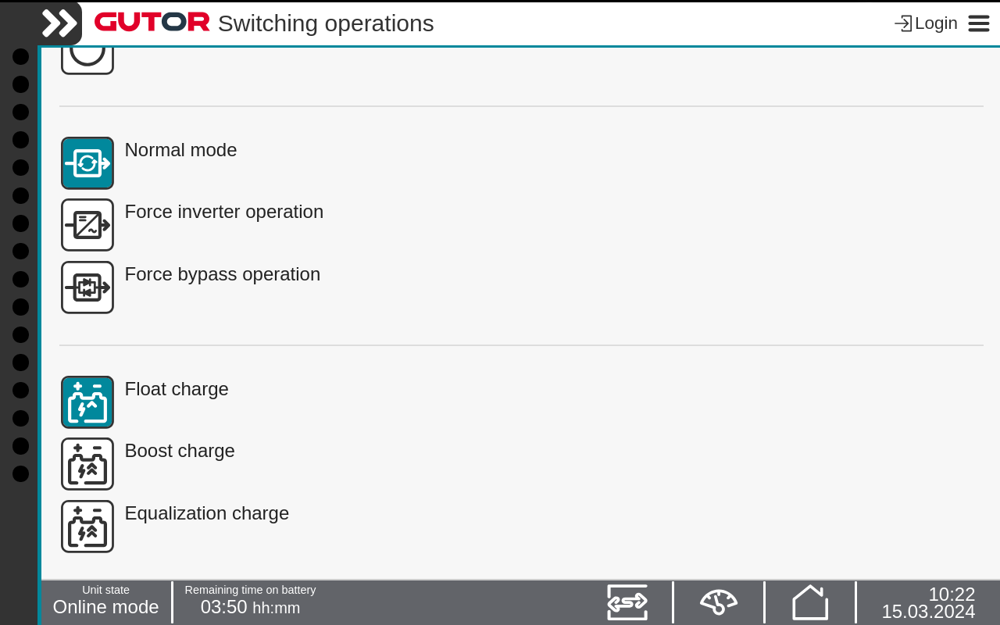

How to Change to Float Charge Press the Switch operation icon in the Status bar. Press the Float charge button. Confirm the change. Note: The current active rectifier charge mode is indicated by the green icon.  The rectifier have changed to float charge.